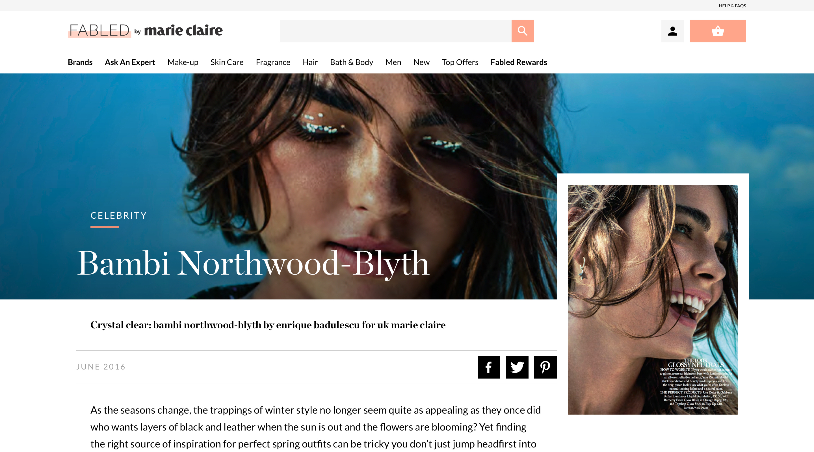
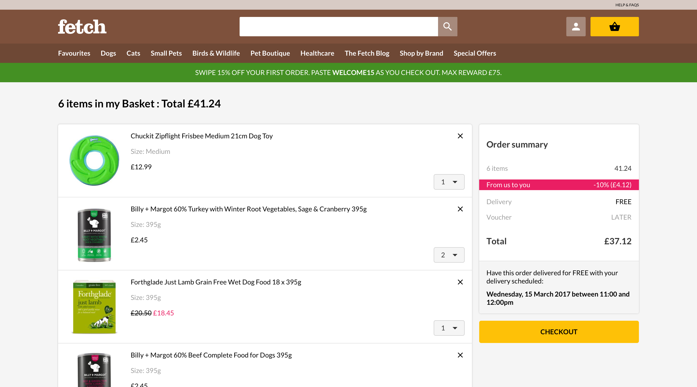

Customer Insights & Ideation
Customer Insights & Ideation
Customer Insights & Ideation
Customer Insights & Ideation
Customer Insights & Ideation
Experience Strategy & Vision
Lead all aspects of the UX and UI design.
Liaised with developers, analysts, marketing and product owners to deliver user-centered and business validated outcomes.
Customer Insights & IdeationI partnered with three project managers and one other lead designer to uncover insights and translate concepts into features that address customer behaviours and motivations.
Experience Strategy & VisionI created frameworks and prototypes to share the vision, design principles and content strategy. This helped to evangelise ideas, gain alignment and drive decision making.
Planning & Scope DefinitionI defined the product with my project manager partners. I evangelised customer goals and balanced business goals. I prioritised and negotiated features for launch and beyond.
Oversight & CoordinationI designed across and collaborated with seven platform designers and their PM partners to translate product features for each platform context.
Led all aspects of the UX and UI design.
Built, grew and curated an in-house agile UX and UI design team.
Defined and executed the design language, UX strategy, and UI.
Liaised with developers, analysts, marketing and merchandise personnel, and product owners to deliver user-centered and business validated outcomes.
Design Execution & ValidationI designed down on Kindle Fire, Android, iOS and the iOS mobile Digital Music Store. I executed journeys, wireframes, prototypes and design specs.
LeadershipI designed up and presented works to gain buy‐in from executives, senior stakeholders and many other Amazon teams throughout the project lifecycle.

My role
I led the design of Ocado Zoom for the Digital Music Store across Kindle Fire, Fire Phone, iOS, Android, Desktop and Web since the outset of the project in July 2013.
Up until July 2015, I led efforts to evolve the service and address customer pain‐points related to the browse and discovery experience.
In short
Customer Insights & IdeationI partnered with three project managers and one other lead designer to uncover insights and translate concepts into features that address customer behaviours and motivations.
Experience Strategy & VisionI created frameworks and prototypes to share the vision, design principles and content strategy. This helped to evangelise ideas, gain alignment and drive decision making.
Planning & Scope DefinitionI defined the product with my project manager partners. I evangelised customer goals and balanced business goals. I prioritised and negotiated features for launch and beyond.
Oversight & CoordinationI designed across and collaborated with seven platform designers and their PM partners to translate product features for each platform context.
Led all aspects of the UX and UI design.
Built, grew and curated an in-house agile UX and UI design team.
Defined and executed the design language, UX strategy, and UI.
Liaised with developers, analysts, marketing and merchandise personnel, and product owners to deliver user-centered and business validated outcomes.
Design Execution & ValidationI designed down on Kindle Fire, Android, iOS and the iOS mobile Digital Music Store. I executed journeys, wireframes, prototypes and design specs.
LeadershipI designed up and presented works to gain buy‐in from executives, senior stakeholders and many other Amazon teams throughout the project lifecycle.

Good UX for Zoom equates to simplicity and speed. The app design reflects this with an interface designed to make the shopping experience frictionless. Inspired by other on-demand apps, the journey from browsing to checkout to delivery is intuitive and streamlined.